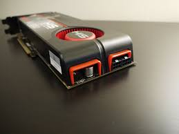

In 2006, AMD bought ATI for $5.4 billion, not only purchasing a graphics card company and some talented staff, but a host of new markets as well: mobile graphics, game console graphics, and the potential to develop a new form of hybrid CPU-GPU processor that AMD called the "Fusion APU."
scource: "https://www.theverge.com/2012/11/15/3646698/what-happened-to-amd"